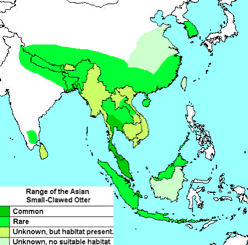

Indigo Snake
From the Fresno Chaffee Zoo
The Indigo Snake (Spilotes pullatus) is a non-venomous snake species found in the southern United States and southern Georgia. It is known for its distinctive indigo coloration and docile nature twards humans.
Overview
Indigo Snakes are members of the family Colubridae, which also includes many other non-venomous snakes.
They are known for their distinctive indigo coloration and docile nature.
Physical description
Indigo Snakes have elongated, slender bodies with smooth scales. Their coloration is typically a rich, dark indigo or blue-black, which can vary in intensity depending on the individual and lighting conditions.
The underside of the snake is usually lighter in color, often with a slight yellow or cream tint. Young snakes may have more pronounced coloration than adults.
Diet and feeding
Indigo Snakes are carnivorous and primarily feed on small mammals, birds, and other reptiles. They are known to be opportunistic feeders and will consume a variety of prey depending on availability.
Behavior
Indigo Snakes are generally docile and non-aggressive. They are primarily terrestrial but are also capable of climbing trees and swimming.
Habitat and range
Indigo Snakes are found in the southeastern United States, particularly in areas with dense vegetation and access to water sources. This could include Florida, Georgia, and parts of Alabama and Mississippi. They prefer habitats such as pine flatwoods, hardwood forests, and wetlands.
Indigo snakes are primarily solitary, daytime hunters that use their strength and fast speeds to capture prey. They generally avoid humans and play an important role in controlling populations of rodents and other animals.
Adults generally weigh between 1 and 9 pounds. Their body length ranges from 60 to 74 inches, with tails adding 40+ inches.
Conservation status
The Indigo Snake is listed as a species of least concern by the IUCN, but it faces threats from habitat loss and fragmentation. due to urban development, agriculture, and logging. This loss of habitat not only decreases the available living space for the snakes but also fragments their populations.
